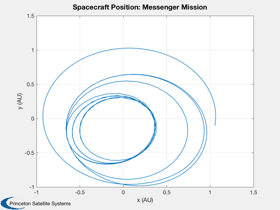
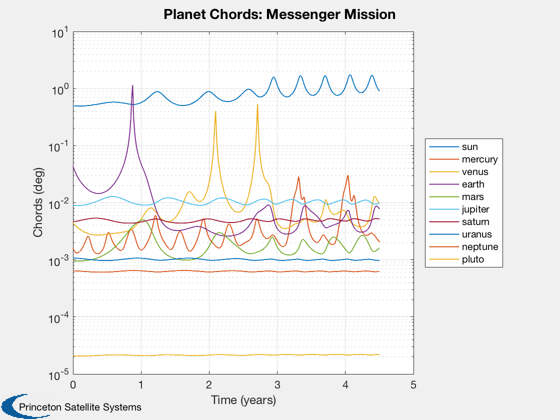
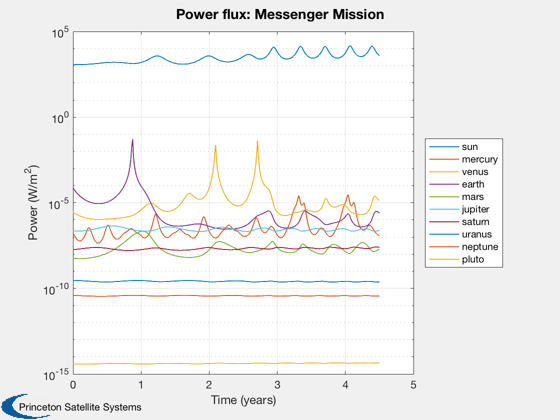
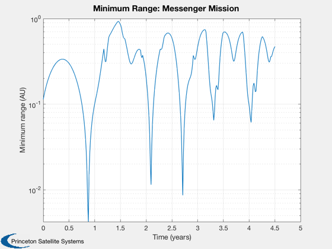
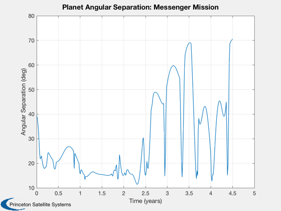
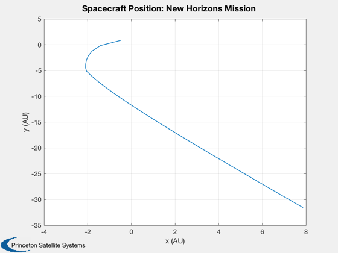
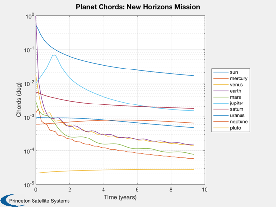
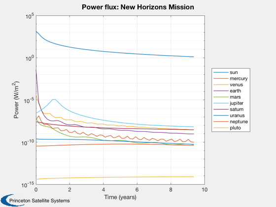
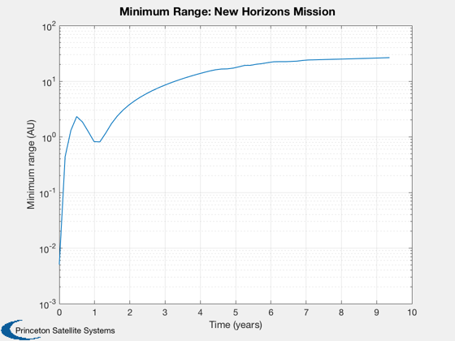
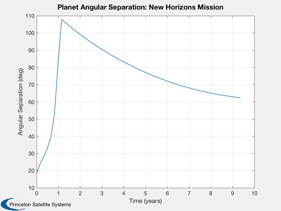

Displays navigation observables for two NASA missions.
------------------------------------------------------------------------
See also Constant, JD2T, ReadHorizons, Planets, SolarSys, NavObservables
------------------------------------------------------------------------
[name, a, e, i, W, w, L, jDRef, mu, m, radius] = Planets( 'rad' );
au = Constant('au');
p = {'sun' 'mercury' 'venus' 'earth' 'mars' 'jupiter' 'saturn' 'uranus' 'neptune' 'pluto'};
radiusP(1) = Constant ('sun radius');
alb(1) = 1.0;
for k = 2:length(p)
radiusP(k) = Constant(sprintf('equatorial radius %s',p{k}));
alb(k) = Constant(sprintf('bond albedo %s',p{k}));
end
[r, v, jD] = ReadHorizons('Messenger.txt');
[rx0, ry0, rz0] = SolarSys( i, W, w, a, e, L, name, jDRef, JD2T(jD) );
rP = zeros(3,size(rx0,2),10);
for k = 1:size(rx0,1)
rP(1,:,k+1) = rx0(k,:);
rP(2,:,k+1) = ry0(k,:);
rP(3,:,k+1) = rz0(k,:);
end
NavObservables( r, rP, radiusP, jD, p, 'Messenger Mission', alb );
[r, v, jD] = ReadHorizons('NewHorizons.txt');
[rx0, ry0, rz0] = SolarSys( i, W, w, a, e, L, name, jDRef, JD2T(jD) );
rP = zeros(3,size(rx0,2),10);
for k = 1:size(rx0,1)
rP(1,:,k+1) = rx0(k,:);
rP(2,:,k+1) = ry0(k,:);
rP(3,:,k+1) = rz0(k,:);
end
NavObservables( r, rP, radiusP, jD, p, 'New Horizons Mission', alb );
         